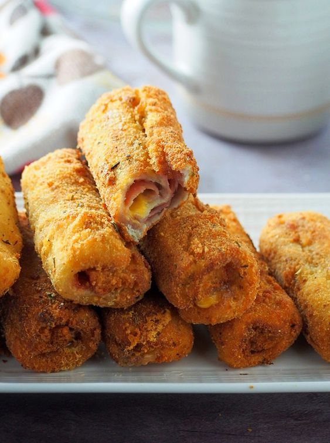
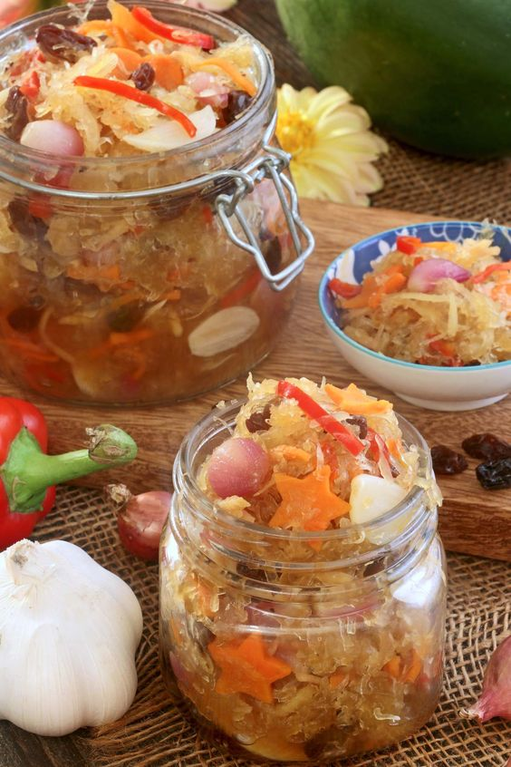
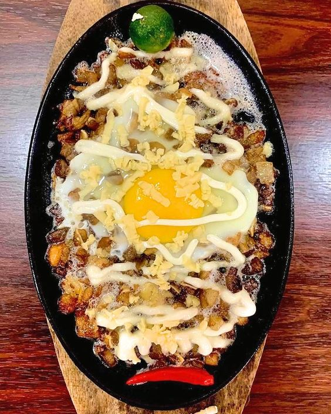
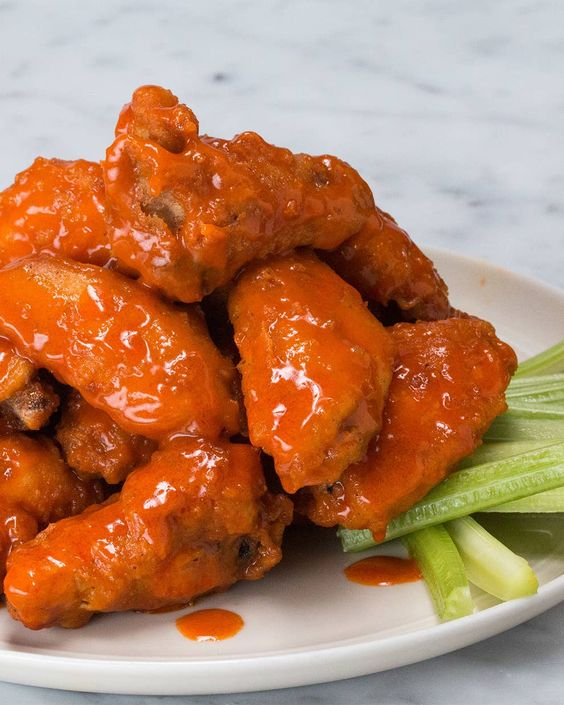

HAM AND CHEESE ROLLS

INGREDIENTS:
- Ingredient 1 ▢8 slices bread
- Ingredient 2 ▢4 ounces ham sliced into thick strips
- Ingredient 3 ▢3 ounces cheese sliced into thick strips
- Ingredient 4 ▢1/4 cup pimento optional
- Ingredient 5 ▢3/4 cup Panko bread crumbs
- Ingredient 6 ▢2 pieces eggs beaten
- Ingredient 7 ▢2 cups cooking oil
- Ingredient 8 ▢1/2 cup mayonnaise
INSTRUCTIONS:
- Step 1 Remove the dark ends of the sliced bread.
- Step 2 Heat the cooking oil in a cooking pot.
- Step 3 Place the bread slices in a zip lock bag.
- Step 4 Flatten using a rolling pin.
- Step 5 Spread mayonnaise on the flatten piece of bread
- Step 6 Arrange the ham, cheese, and pimento strips on the bread.
- Step 7 Roll the bread until the filling is covered.
- Step 8 Secure with a toothpick.
- Step 9 Dip the rolled bread in beaten egg.
- Step 10 Place the Panko bread crumbs in a large Ziploc bag
- Step 11 And then put the dipped rolls in.
- Step 12 Shake until everything is covered with crumbs.
- Step 13 Fry in low to medium heat until the color turns golden brown (about 5 to 7 minutes).
- Step 14 Arrange the fried rolls in a plate line with paper towels.
- Step 15 Serve as a snack or slice into pieces and serve as an appetizer.Share and enjoy!
ATCHARANG PAPAYA

INGREDIENTS:
- Ingredient 1 ▢3 lbs shredded green papaya
- Ingredient 2 ▢1 medium carrot thinly sliced
- Ingredient 3 ▢1 small red bell pepper julienne
- Ingredient 4 ▢3/4 cups raisins
- Ingredient 5 ▢1 head garlic sliced
- Ingredient 6 ▢4 thumbs ginger julienne
- Ingredient 7 ▢2 cups vinegar
- Ingredient 8 ▢1 1/3 cups granulated white sugar
- Ingredient 9 ▢1 teaspoon salt
- Ingredient 10 ▢1/2 teaspoon ground black pepper
- Ingredient 11 Soak Tha Papaya In
- Ingredient 12 ▢5 cups water
- Ingredient 13 ▢4 tablespoons salt
INSTRUCTIONS:
- Step 1 Combine water and 4 tablespoons salt in a mixing bowl.
- Step 2 Add the shredded papaya.
- Step 3 Cover and place inside the refrigerator. Soak for 2 days.
- Step 4 Put the papaya in a cheesecloth in a way that it is trapped in the center.
- Step 5 Gently rotate the cheesecloth while tightly holding one end.
- Step 6 Continue to rotate until the papaya completely releases liquid.
- Step 7 Do this more than once for better results.
- Step 8 Arrange the papaya in a mixing bowl.
- Step 9 Add all the vegetables and raisin. Toss and set aside.
- Step 10 Make the syrup by heating the vinegar in a cooking pot.
- Step 11 Once it starts to boil, add sugar and 1 teaspoon salt.
- Step 12 Mix well and cook for 1 to 3 minutes.
- Step 13 Put the papaya mixture in a mason jar.
- Step 14 Do not completely fill the jar, leave a little space for the syrup.
- Step 15 Gently pour the hot syrup in each jar. Quickly close the lid.
- Step 16 This will somewhat cook the papaya and veggies and will make it a bit softer.
- Step 17 Let it cool and then refrigerate, or simply store in a shelf in room temperature.
SIZZLING SISIG

INGREDIENTS:
- Ingredient 1 ▢1 ½ lbs. pork belly boiled for 1 hour
- Ingredient 2 ▢½ cup Lady’s Choice Mayonnaise
- Ingredient 3 ▢2 pieces onion chopped
- Ingredient 4 ▢4 pieces Thai chili pepper chopped
- Ingredient 5 ▢2 pieces long green pepper chopped
- Ingredient 6 ▢16 grams Knorr SavorRich Pork equivalent to 1 sachet
- Ingredient 7 ▢½ teaspoon ground black pepper
- Ingredient 8 ▢2 tablespoons soy sauce
- Ingredient 9 ▢¼ cup margarine
- Ingredient 10 ▢2 cups cooking oil
INSTRUCTIONS:
- Step 1 Heat oil in a deep cooking pot or deep fryer.
- Step 2 Fry the boiled pork belly until golden brown and crispy
- Step 3 Chop the crispy pork belly into small pieces. Set aside.
- Step 4 Heat half of the margarine in a pan.
- Step 5 Sauté half of the onions until soft.
- Step 6 Add chopped pork. Saute for 30 seconds.
- Step 7 Add Knorr SavorRich. Stir and then add chili peppers and season with
- Step 8 ground black pepper and soy sauce.
- Step 9 Cook for 1 minute.Add Lady’s Choice Mayonnaise.
- Step 10 Stir and add remaining onion. Set aside.
- Step 11 Heat a metal plate (sizzling plate) on a stovetop. Melt remaining margarine.
- Step 12 Transfer the crispy pork sisig into the metal plate. Let it stay for 30 seconds
- Step 13 Serve with warm rice and your favorite beverage. Enjoy!.
LUMPIANG SHANGHAI
INGREDIENTS:
- Ingredient 1 ▢2 1/2 lbs. ground pork
- Ingredient 2 ▢1 piece Knorr Pork Cube
- Ingredient 3 ▢50 pieces lumpia wrapper
- Ingredient 4 ▢3/4 cup carrot minced
- Ingredient 5 ▢2 pieces onions minced
- Ingredient 6 ▢2 pieces eggs
- Ingredient 7 ▢¼ cup parsley minced
- Ingredient 8 ▢½ teaspoon ground black pepper
- Ingredient 9 ▢1 teaspoon salt
- Ingredient 10 ▢1 teaspoon Sesame oil
- Ingredient 11 ▢1 teaspoon garlic powder
- Ingredient 12 ▢2 cups cooking oil
INSTRUCTIONS:
- Step 1 Combine ground pork, carrot, onion, and parsley in a bowl. Mix well.
- Step 2 Add egg, ground black pepper, salt, garlic, powder, and Sesame oil.
- Step 3 Continue to mix until the ingredients are well blended.
- Step 4 Crush the Knorr pork cube and add it into the mixture.
- Step 5 Blend the ingredients altogether completely.
- Step 6 Put 1 to 1 1/2 tablespoons of meat mixture over a piece of lumpia wrapper.
- Step 7 Wrap and roll to secure the mixture.
- Step 8 Continue this step until the mixture is completely consumed.
- Step 9 Heat oil in a cooking pot in low to medium heat.
- Step 10 Deep fry the lumpia until it turns golden brown.
- Step 11 Remove from the pot and place in a plate lined with paper towel.
- Step 12 Transfer to a serving plate. Serve with sweet and sour sauce. Share and enjoy!
BUFFALO WINGS

INGREDIENTS:
- Ingredient 1 ▢2 lbs chicken wings
- Ingredient 2 ▢5 Tablespoons unsalted butter
- Ingredient 3 ▢1/2 cup Frank's RedHot
INSTRUCTIONS:
- Step 1 Divide the wings into 3 parts. Separate the drumette from the wingette.
- Step 2 Cut off the wingtip and set aside. Note: we'll only be using the big parts.
- Step 3 Pat the wings dry with paper towel and arrange inside an air fryer.
- Step 4 Air fry one side for 12 minutes at 350F.
- Step 5 Do the same with the opposite side.
- Step 6 Make the sauce by melting butter in a microwave oven.
- Step 7 Add the hot sauce and stir until well blended.
- Step 8 Soak chicken wings in the sauce. Make sure that each piece is fully coated.
- Step 9 Serve with ranch dressing, carrots, and celery. Share and enjoy!.